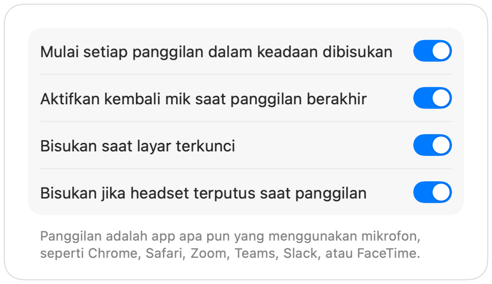

Cara membisukan Microsoft Teams dengan AirPods di Mac
Pintasan Teams, Command-Shift-M, hanya berfungsi saat jendela Teams sedang aktif. Di tengah rapat konferensi Anda biasanya membuka hal lain: dokumen, browser, atau layar yang dibagikan.
Muffle membisukan mikrofon Anda dari mana saja, baik di app Teams maupun Teams di web. Cukup tekan AirPods Anda, tekan satu pintasan, atau klik bilah menu.
Bisukan Teams dari mana saja
- 1
Instal Muffle dan izinkan akses mikrofon.
- 2
Bergabunglah ke rapat Teams Anda.
- 3
Tekan Control-Option-M atau batang AirPods Anda untuk membisukan. Ikon bilah menu akan berubah menjadi merah.
- 4
Tekan lagi untuk mengaktifkan suara, atau tahan pintasan untuk berbicara saat dibisukan.

- Teams di tab browser mendapatkan dukungan AirPods yang sama seperti Google Meet melalui Muffle.
- Aktifkan “Bisukan saat layar terkunci” agar mikrofon Anda tidak tetap aktif saat Anda menjauh dari Mac.
Pertanyaan umum
Apakah menekan AirPods berfungsi di app Teams?
Hal ini bergantung pada versi Teams Anda, karena Teams bisa mengambil alih tekanan AirPods. Pintasan dan tombol bilah menu Muffle tetap berfungsi dalam situasi apa pun.
Apakah Teams akan menampilkan bahwa saya dibisukan?
Tidak selalu. Muffle membisukan mikrofon perangkat keras, jadi Teams mungkin tetap menampilkan mik aktif meskipun orang lain tidak mendengar suara apa pun.